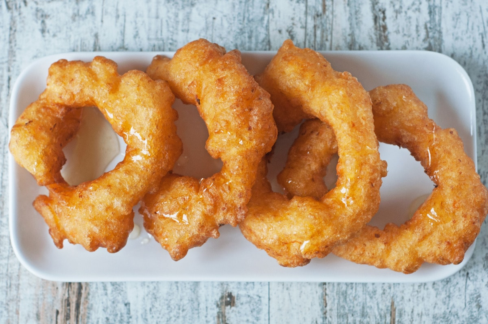

Home
Picarones

Description
A classic Peruvian breakfast food or dessert. Easy to make and delicious.
Ingredients
- 1 Tbs. dry baking yeast
- 1 tsp. sugar
- 1/4 cup water
- 1 Tbs. ground corn or cornmeal
- 1/2 tsp. sea salt
- 1/4 tsp. crushed anise
- 3 cups white flour
- 1 cup premium beer
- 1 cup cooked butternut squash (pureed)
- 1-2 cups brown sugar
- 1 cup water
- 3 lemon or orange peel shreds
Steps
- Doughnut Instructions: Dissolve sugar and yeast in the warm water, use a small bowl for this.
- Mix cornmeal, salt, anise seed, 1 cup flour and beer in a large bowl. Add the yeast mixture and mix.
- Add squash or pumpkin and 2 cups of flour. Mix together to form a soft dough texture. Cover with a towel and let the mixture rise in a warm place for around 2 hours. You can also let the mixture rise in the refrigerator for 4 to 12 hours if covered with film.
- Syrup instructions: Add the Syrup ingredients in a saucepan and leave to boil over medium heat level. Reduce the heat to low and leave to simmer until a thick syrup forms after 15 minutes or so. Remove saucepan from heat.
- To prepare doughnuts: Heat oil in a wok. Drop tablespoons of dough into hot oil and fry until crispy golden. Drain on paper towels. Serve hot with hot syrup.